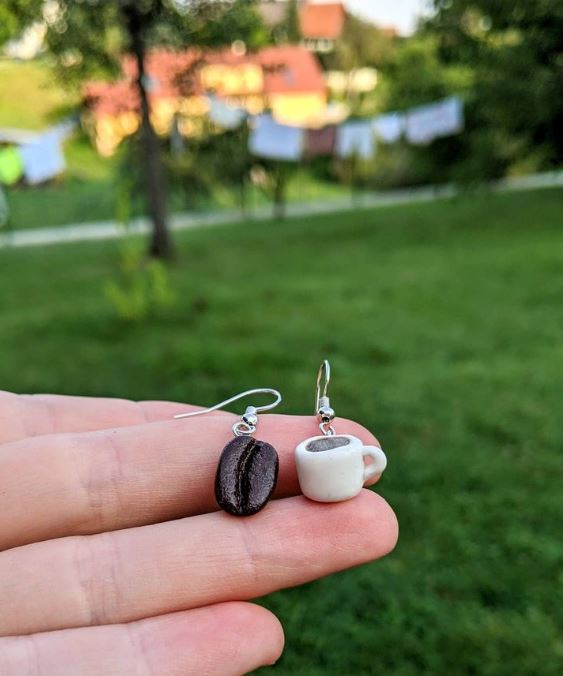
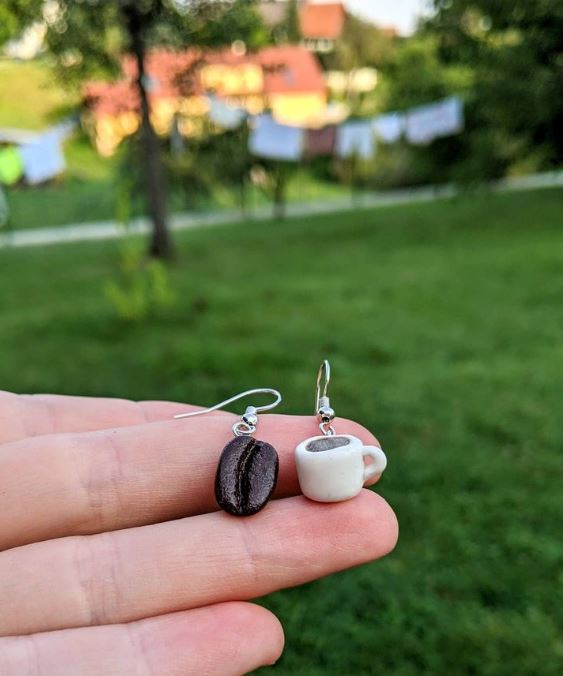

About me
I am a Swede who ended up in Prague because of love. And I also fell
in love with the city. Hanging out with friends at some events, shows,
parties, or with board games is what I usually do on my spare time. I
like to have fun and wanna live my life to the fullest. But a night
home infront of the TV is necessary as well sometimes.
One of my hobbies is handcraft, I just love to create with my hands. Physical creation is also a passion and thats why I regularly take dance classes. In the middle of May, you might find me in the hosting country for Eurovision Song Contest since I'm a fan of the show.
Even though I love the city life I do need time in nature to recover and would not say no to a day hike or a weekend in a cottage. Meditation is also something that I want to learn to do regularly in my life.
Learning Czech is also an on-going project and I reacently started to trian my cat.
One of my hobbies is handcraft, I just love to create with my hands. Physical creation is also a passion and thats why I regularly take dance classes. In the middle of May, you might find me in the hosting country for Eurovision Song Contest since I'm a fan of the show.
Even though I love the city life I do need time in nature to recover and would not say no to a day hike or a weekend in a cottage. Meditation is also something that I want to learn to do regularly in my life.
Learning Czech is also an on-going project and I reacently started to trian my cat.